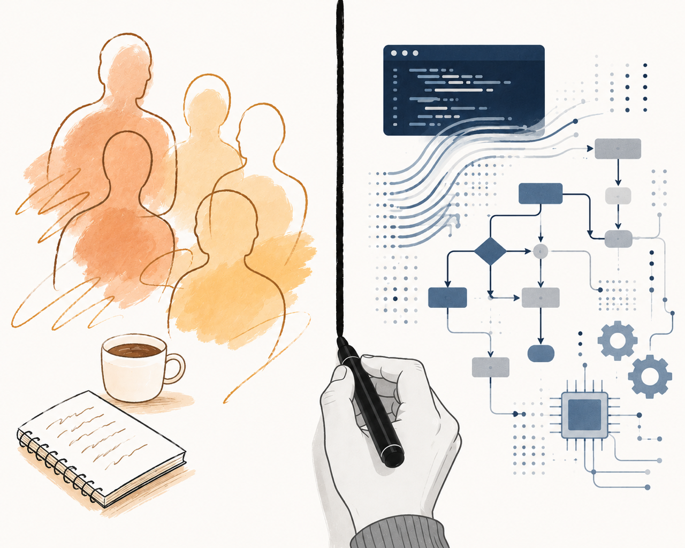

Created with ChatGPT
Introduction
Agentic AI is the first enterprise technology that forces firms to decide, explicitly, where human judgement ends and machine autonomy begins. That decision is no longer primarily technical. It is organisational.
An agent can plausibly perform 10% of a task, 50%, or nearly all of it. It can draft an FDA submission for review by a regulatory specialist, validate a payment instruction before human approval, autonomously remediate a network issue within defined limits, or execute an entire software development workflow under engineer supervision. The central design question is therefore no longer whether the technology works. It is where the boundary between human and machine should sit - and who inside the firm has the authority to define it.
That boundary decision is now one of the most consequential choices in any enterprise deployment because it is the point at which multiple domains converge: technical capability, regulatory tolerance, operational resilience, workforce design, governance and organisational structure. Previous generations of enterprise technology improved how work was executed. Agentic systems change who - or what - executes it. The boundary itself becomes the design problem.
The question is no longer hypothetical. Production deployments at JPMorgan Chase, Goldman Sachs, Citigroup, BNY, Deutsche Telekom, AT&T and Moderna show that agentic systems can already operate inside large-scale, regulated environments. JPMorgan uses agents to generate investment-banking materials and internal analysis workflows. BNY assigns “Digital Employees” human managers and embeds them into operational teams. Deutsche Telekom allows network agents to take autonomous remediation actions in production environments. Goldman Sachs is redefining engineers as supervisors of autonomous coding agents rather than authors of every line of code themselves.
The harder problem is organisational. How do firms introduce agents without weakening control environments, degrading accountability structures or eroding the judgement of experienced practitioners? Beneath that sits a more fundamental question that most firms have not yet addressed explicitly: who owns the human-machine boundary?
In most organisations, the question is structurally orphaned. Technology functions own the systems that make new forms of autonomy possible. HR owns roles and workforce design. Operations owns workflows. Risk and compliance own what is permissible. Business-unit leaders own commercial outcomes. But no single function traditionally owns the redesign of human and machine work together. As a result, the boundary is often set implicitly - by local managers, by individual employee behaviour, by inherited processes, or by trial and error.
This article examines seven publicly documented production deployments of agentic AI across financial services, telecommunications and life sciences. Across the cases, three distinct mechanisms emerge for governing the boundary between human and machine work: executive ownership, operational ownership and practitioner ownership. Four operational patterns recur consistently across the deployments. Beneath all of them sit three foundational shifts - operating model, people and data - that firms must redesign in parallel with deployment.
The firms succeeding with agentic AI are not simply introducing new technology. They are redesigning how authority, judgement and execution are distributed across humans and machines.
The central question
Every workflow in a firm has an underlying question: which steps does a human do, which does a machine do, and where do they hand off? In the current org chart that question is structurally orphaned. The CTO owns the technology that makes new boundaries possible. The CHRO owns the roles that have to change. The COO owns the workflows in which the boundary sits. Business-unit heads own the P&L. Risk and compliance own what's allowable. None of those roles can decide on their own where the line should now sit - and in a matrix it gets drawn implicitly, by individual managers, by what tasks employees happen to delegate, by trial and error.
This worked for previous waves of technology because previous technology slotted into existing roles. Excel didn't replace the analyst; it changed how the analyst worked. RPA didn't redesign jobs; it automated keystrokes inside them. Cloud was a procurement decision with downstream operational adjustment. Agentic AI breaks the pattern because there is no existing role into which the boundary decision naturally falls. Someone has to own it explicitly, or it gets decided implicitly and badly.
Three of the seven cases solve this problem with different mechanisms. The fact that they each solve it - and that the others have not yet had to - is the most important pattern in the set.
Three mechanisms for owning the boundary
Moderna does it at the C-suite level. Human Resources and Information Technology have been merged into a single function - People and Digital Technology - with one executive accountable for both human and machine work design. This is the cleanest version. Tracey Franklin can decide that an FDA communication is drafted by a GPT and reviewed by a regulatory specialist, eliminate the analyst role that previously did the drafting, hire a different skill profile to do the review, and own the workflow change end to end. No handoff between CIO and CHRO. No committee. No "change management workstream."
BNY does it at the operational level via the Digital Employee construct. Every agent on the Eliza platform has a named human manager. That forces every workflow to have a single owner of the boundary inside the line organisation. The CIO didn't decide where the line sits; the line manager did, with the agent reporting to them like a junior employee whose remit they define and whose performance they review.
Goldman does it inside the role. The engineer is redefined as the supervisor of agent output, so the boundary owner is the practitioner doing the work. This works because Goldman is dense enough in technical capability - roughly one in four employees is a software engineer - to absorb that redefinition. It would not transfer to a population without that base level of fluency.
Three different mechanisms - C-suite, operational, in-role - answering the same question: who owns the human-machine boundary? The other four cases have agentic deployments that work, but do not seem to confront the boundary question at the structural level Moderna, BNY and Goldman have.
The cases
JPMorgan Chase - scale-first, model-agnostic
JPMorgan operates an $18 billion annual technology budget and runs more than 450 generative AI use cases in production today, with internal targets of 1,000 by 2026. The bank's LLM Suite, built in-house on AWS, is deliberately model-agnostic - routing between OpenAI, Anthropic and Gemini models with updates rolling out every eight weeks. Beneath it, the bank is deploying agentic capabilities that connect into internal systems: investment-banking presentation generation in roughly thirty seconds; confidential M&A memo drafting. Roughly half of the 200,000 users access the platform daily; employees self-report 30–40% efficiency gains. Realised value was validated by Evident Insights at approximately $1.5 billion in 2024.
The implication is sequencing. JPMorgan's approach starts with literacy as a foundation, to support and enable agentic capability.
Goldman Sachs - autonomous coding inside the engineering function
Goldman is a 46,000-person investment bank in which roughly one in four employees is a software engineer. CIO Marco Argenti has driven a deliberately technical, engineering-led approach. GS AI Assistant, the firm-wide tool, was rolled out to all 46,000 knowledge workers in 2025 after a year-long 10,000-person pilot, and now sees more than one million prompts per month.
More distinctively, Goldman is piloting Devin - the autonomous software engineering agent from Cognition AI - alongside its 12,000 human developers. The deployment will start with hundreds of Devins and may scale into the thousands. Devin is not a coding assistant in the GitHub Copilot sense. It executes complete multi-step development tasks, with engineers supervising its output rather than authoring code.
"It's really about people and AIs working side by side. Engineers are going to be expected to have the ability to really describe problems in a coherent way and turn it into prompts… and then be able to supervise the work of those agents." - Marco Argenti, CIO, Goldman Sachs
The redefinition of the engineering role is a deliberate workforce-design decision, not an emergent property of the technology.
Citigroup - single-prompt workflows on a remediated infrastructure
Citi is the case that most resembles an institution with a complex, partially-modernised technology stack and a regulator-driven imperative to fix it before deploying AI on top. The bank is recovering from 2022 OCC and Federal Reserve fines totalling more than $130 million tied to data quality and infrastructure deficiencies. Citi has retired more than 2,000 legacy applications, built a strategic co-engineering relationship with Google Cloud, and only then layered agentic AI on top.
Citi Stylus Workspaces, introduced in December 2024 and upgraded with agentic capability in September 2025, runs on Google Gemini and Anthropic Claude. The September upgrade compresses what would previously take several manual steps across different tools into a single prompt - a published example being identifying primary branded credit card partners, outlining their strategic goals, and translating the insights into Spanish, executed from one prompt against multiple internal data sources.
Agents are only as effective as the systems they can orchestrate. The Citi rule of thumb: never agent-automate a system you wouldn't first modernise.
BNY - enterprise multi-agent platform (Eliza)
BNY is the world's largest custodian, overseeing $57.8 trillion in assets under custody and administration. By late 2025, Eliza had become what BNY describes internally as the operating system of the bank. Eliza is model-agnostic, routing between OpenAI, Google Gemini, Anthropic and others by task type.
Governance is embedded at the system level. All prompting, agent development and model selection happens inside a governed environment, with mandatory AI training, standardised permissions and explainability benchmarks. Agents built on the platform are designated Digital Employees - assigned identities, login credentials, access controls, and human managers who oversee their work and conduct performance reviews. Around 140 Digital Employees are deployed across the bank as of early 2026, handling functions from payment instruction validation to code security enhancements. 96% of BNY's workforce now uses Eliza, up from 36% in its first year, and approximately 20,000 employees actively build agents on the platform. The Contract Review Assistant has cut legal review time by 75%. Q4 2024 SEC filings report a ~5% reduction in cost per custody trade and a 15% reduction in cost per NAV calculation.
"Now, instead of handling certain tasks in the first instance, the role of the human operator is to be the trainer or the nurturer of the digital employee." - Sarthak Pattanaik, Chief Data and AI Officer, BNY
BNY is the most architecturally mature publicly documented agentic deployment in financial services. Mandatory training, governed agent-building environments, named Digital Employees with human managers, explainability benchmarks at the system level - a directly applicable blueprint for any large institution designing agentic governance.
Deutsche Telekom - RAN Guardian and MINDR
Deutsche Telekom has made autonomous network operations a stated strategic priority through a multi-year partnership with Google Cloud on Vertex AI. Its RAN Guardian Agent, live in production in Germany since November 2025, is a multi-agent system: an event agent ingests information about upcoming high-demand events; a monitoring agent assesses how the network will handle the expected load; a remediation agent reallocates capacity or adjusts configurations in real time. The split between autonomy and oversight is deliberate and explicit: roughly 75% of agent actions are fully autonomous; the remaining 25% require human approval before execution. In its first month the system triggered over 100 remediation actions, and processes that previously took roughly an hour now complete in minutes.
"Traditional network management approaches are no longer sufficient to meet the demands of 5G and beyond. We are pioneering AI agents… as a step towards autonomous, self-healing networks." - Abdu Mudesir, Group CTO, Deutsche Telekom
The 75/25 split between autonomous and human-approved actions is a useful concrete reference for sizing the governance envelope of a first deployment.
AT&T - agentic operations at scale
AT&T runs more than 410 generative AI agents in active production, with Ask AT&T Workflows - a graphical drag-and-drop agent builder - now deployed to over 100,000 employees. The framing from the Chief Data and AI Officer is unusually clean: a categorical shift from the information economy to the action economy. Agents work within a governed ecosystem: every action is logged; data isolation and role-based access are enforced when one agent passes work to another; use-case prioritisation is institutionalised through a Generative AI Transformation Office.
"Agents move AI from the information economy into the action economy. They go way beyond generating content. Agents take it further by planning and executing a task from beginning to end, with human guidance and intervention when needed." - Andy Markus, Chief Data and AI Officer, AT&T
The Generative AI Transformation Office is a strong organisational reference for centralised agentic governance at enterprise scale.
Moderna - workforce as the unit of design
Moderna employs approximately 5,800 people. CEO Stéphane Bancel has stated openly that this is a deliberate counterfactual choice: a traditional pharmaceutical company at this product cadence would need roughly 100,000. After explicit comparative testing in April 2024, the company moved its workforce from a proprietary tool to ChatGPT Enterprise. Within two months it had 750 custom GPTs in use; by 2025, more than 3,000, with 40% of users actively building their own. Specific deployments include Dose ID for clinical-trial dose-selection support, regulatory-communication GPTs for FDA filings, and a virtual HR agent that has converted what was previously junior-level analyst work.
The structural decision Moderna made in late 2024 is the unique one. The company merged Human Resources and Information Technology into a single function - People and Digital Technology - with a single executive accountable for both human and machine workflows. Moderna's answer is that there should be one executive, the same one accountable for organisational design and skills strategy, because the question is fundamentally one of work design, not technology selection.
"I've shifted from workforce planning to work planning. Roles are now being created, eliminated, and reimagined based on whether the task is better suited to people or machines." - Tracey Franklin, Chief People and Digital Technology Officer, Moderna
What the public record does not show
These are seven announced wins, drawn from corporate communications, executive interviews and SEC filings. The public record does not show how many Digital Employees BNY has paused or rolled back, what proportion of Devin's pull requests are merged unchanged versus heavily edited, what false-positive rates sit inside Deutsche Telekom's 75% autonomous band, or how many of JPMorgan's 450 use cases have been quietly retired. Self-reported productivity gains in the 30–40% range are among the least reliable measurements in management research. The cases that did not work, the deployments that were withdrawn, the firms that decided to wait - none of these are in the published literature. The patterns extracted below describe what works in firms that have so far succeeded. They are not a complete picture of the field.
Patterns from the cases
Agents are named, accountable participants. The most striking operational pattern is how seriously these firms treat agent identity. BNY gives Digital Employees logins, email addresses and human line-managers. Deutsche Telekom tracks two parallel KPI sets - traditional performance metrics, and a new set specific to agent performance such as response time and accuracy. AT&T logs every action an agent takes, with data isolation and retention policies enforced when one agent passes work to another. Goldman uses pull-request approval rates as a primary KPI on Devin output. Agents are not invisible automation. They are named, audited, performance-reviewed participants in the workflow.
Humans on the loop, not in the way. None of these deployments is fully autonomous. All are designed around where the human sits. Goldman frames engineers as supervisors of agent output rather than authors of code. Deutsche Telekom splits its RAN Guardian work explicitly: 75% of actions are fully autonomous; 25% require human approval before execution. AT&T enforces role-based access at every agent handoff and keeps a human overseeing the chain reaction. BNY assigns its Digital Employees to human managers who conduct performance reviews. Governance is not a brake on autonomy. It is the architecture that lets autonomy scale.
Governance is engineered, not bolted on. Agentic systems can propagate errors across multiple steps; a single incorrect decision can cascade if it isn't contained. The cases that work are ones where governance was built into the system from day one. BNY trained 98% of its workforce on responsible AI use before scaling to 140 Digital Employees, and all prompting, agent development and model selection happens inside a governed environment with explainability benchmarks at the system level. AT&T institutionalises use-case prioritisation through a Generative AI Transformation Office. The most disciplined published framework comes from DBS Bank, whose PURE checklist tests every agent before it is granted production access: it must be purposeful (clear, bounded scope), unsurprising (consistent, explainable behaviour), respectful (honours regulatory boundaries and approval gates) and easy to explain (any decision articulable to an auditor in plain language). Behind the framework is a concrete control: real-time performance metrics with explicit thresholds, and an automated kill switch that suspends an agent's write access if any threshold is breached. That is what makes higher autonomy levels safe to deploy.
From answers to action. Every case in this set is about agents that do things - drafting M&A memos and pitch materials, reviewing contracts, validating payment instructions, triaging alerts, processing HR requests, reallocating network capacity - rather than describing them. AT&T frames it cleanly: a categorical shift from the information economy, where AI answers questions, to the action economy, where AI executes tasks end-to-end. BNY's Digital Employees, Goldman's Devin, Deutsche Telekom's RAN Guardian and Citi's single-prompt agentic workflows are variations of the same pivot.
The three foundations
The opportunity rests on three foundations. Operating model: sequential pipelines give way to parallel agent networks coordinated by an orchestrator. People: new roles and skills around agent supervision, exception handling and critical evaluation - without losing the domain expertise that makes oversight meaningful. Data: agents can only reason reliably over a coherent, queryable data estate. Each is a multi-year programme. Each can begin in parallel with a first proof of concept. None can be skipped.
Operating model
Today's operating model is sequential. Work passes from team to team in a pipeline - sales to credit to onboarding to operations; business to legal to compliance to document production; research to trading to settlements to reporting - with hand-offs at every stage. Most of the elapsed time on any piece of work is spent waiting in a queue, not being worked on. The coordination overhead - meetings, status reports, action chasing - is the largest single source of reclaimable time, and is invisible in current cost structures because it does not appear on a project plan.
The agentic model replaces the pipeline with a network. Agents work in parallel within a defined constraint envelope; an orchestrator coordinates handoffs, escalation and exception routing; humans engage at the points where judgement, novelty or risk demand it. The right human–AI relationship varies by activity. Three engagement patterns recur across the cases:
Human-in-the-loop. AI recommends; humans approve before action. The default for novel or high-stakes work, and the appropriate posture for any first deployment in a regulated context.
Human-on-the-loop. AI acts autonomously within parameters; humans monitor and can intervene. Suitable for routine work once a track record has been established - Deutsche Telekom's 75% autonomous network band, BNY's Digital Employees handling routine payment validation, and Moderna's HR agent answering employee queries all sit here.
Human-at-the-edge. AI is fully autonomous; humans are notified only of exceptions. Reserved for high-volume, low-consequence activities where the cost of error is review effort rather than service impact.
Two design tensions matter. First, speed versus auditability. Agents move faster than any human review cadence, which creates pressure either to slow them down (defeating the purpose) or to redesign assurance to be probabilistic and retrospective rather than sequential and pre-emptive. The latter is the right answer. Second, centralisation versus domain specificity. There is a strong pull to centralise agent infrastructure for efficiency. But generic enterprise agents under-perform on domain-specific work. The model needs a federating principle: shared infrastructure, domain-tuned constraints.
The deeper opportunity is not function-by-function efficiency. It is the dissolution of the seams between functions that today consume disproportionate management time.
People
The dominant model today is that people own work. A relationship manager owns the client. An analyst owns the research note. A product controller owns the daily P&L. A compliance officer owns the alert disposition. An operations associate owns the reconciliation. Agentic AI breaks this. Agents own tasks, run workflows, draft artefacts and chase dependencies autonomously. The human role shifts from doing to directing, judging and governing - and that requires real role redesign, not retraining.
The risk runs in both directions. If practitioners override agents or ignore outputs, there is no efficiency gain and a sunk cost. If they rubber-stamp, there is speed but the risk of undetected errors. The point is to preserve genuine domain expertise alongside the new responsibilities. Without that expertise, oversight becomes ceremonial. Three role shifts matter most:
Senior practitioners become orchestrators. Whether senior bankers, portfolio managers, chief risk officers or heads of operations, the role shifts from producing the artefact - the pitch book, the investment memo, the risk attribution, the monthly close - to defining the constraints and judgement criteria within which agents do. Their accumulated contextual knowledge - what good looks like, where the real risk lies, what the firm will and won't tolerate - effectively becomes the system design. This requires senior leaders to genuinely understand what agents can and cannot do.
Coordinators become workflow designers and exception handlers. Project managers, operations leads, programme managers, team supervisors across every function. Agentic systems absorb the routine coordination work - dependency tracking, status reporting, action chasing, queue management - so the role shifts to designing the workflows themselves and setting the decision thresholds at which agents escalate to a human.
Mid-level practitioners become human–AI teaming specialists. Associates, analysts and officers across front, middle and back office - junior bankers, credit analysts, KYC officers, payment investigators, paralegals. This is the most endangered layer if handled poorly, and the most valuable if handled well. These are the people who work fluidly alongside agents - prompting effectively, evaluating outputs critically, catching errors that look plausible but are wrong.
The mid-level layer raises a structural question that the case studies do not answer: how do firms create a pipeline into the senior orchestrator role when much of the foundational work that historically built that judgement has been absorbed by agents? Someone who has never reviewed a credit memo line by line, never reconciled a P&L manually, never sat through ten thousand KYC files, may struggle to evaluate the agent that now does those things. The risk is that the next generation of senior practitioners is structurally less expert than this one. There is no obvious answer, but the firms that recognise the question are more likely to find one than the firms that don't.
Trust calibration is the central operational risk. Teams either over-trust agents and miss errors, or under-trust them and recreate the manual work alongside the agent. Building institutional knowledge of where agents are reliable, and where they fail, is a capability that must be deliberately developed. The right posture is iterative - deploy, observe, recalibrate - rather than fix a model and run it.
A second principle: don't encode the mess. The instinct to document existing processes before automating them risks faithfully reproducing broken workflows at scale. Design the ideal workflow first; use structured discovery to surface tacit knowledge and exception logic; then dismantle the old.
Data
Agentic AI is only as capable as the data it operates on. MIT Sloan's research on production agentic deployments found that 80% of implementation effort was consumed by data engineering, stakeholder alignment and workflow integration - not the AI itself.
A client master with duplicate or stale records will cause an agent to misidentify counterparties. A contract repository where versions and amendments aren't linked will produce advice based on superseded terms. Regulatory policies locked in PDFs on shared drives are inaccessible to an agent. A trade-event store that doesn't reconcile to the ledger will produce P&L explanations that don't tie out. Six shifts convert fragmented information into a queryable estate:
Document repositories → structured knowledge. Embed and chunk policies, manuals, contracts and historical artefacts into vector stores; extract entities; build a knowledge graph linking clients, products, deals, controls and risks into a queryable semantic layer.
Siloed systems → integrated event stream so agents can observe state changes and write back, not just read.
Static baselines → living state data. Automated reconciliation of master records, positions, exposures and operational state; versioned history of changes; entity relationships represented as graphs so agents can reason about dependencies and downstream impact.
Tribal knowledge → captured reasoning. Structured decision logging, systematic post-implementation review capture, and retrospective mining of historical documents.
Governance as process → governance as data. Rules encoded as machine-readable guardrails; entitlement data structured so agents know their authorisation boundaries; audit-native logging as a first-class design requirement.
Metrics as reporting → metrics as feedback signal. Outcome-labelled historical projects, captured leading indicators, and feedback loops so practitioner overrides of agent recommendations become structured data that improves future performance.
Vodafone Germany's June 2025 deployment of EXFO Context - a knowledge graph-based semantic model of its operating environment - illustrates the architectural prerequisite. The same logic holds for a custodian's positions and contractual obligations, an insurer's policies and claims, or a corporate's customers, products and contracts. The agents come second. The contextualised data layer they need to reason reliably comes first.
Conclusion
The cases in this paper are not pilots, proofs of concept or speculative roadmaps. They are production deployments operating today, at scale, inside some of the world’s most regulated and operationally complex organisations. Technology is no longer the primary constraint. The harder challenge is organisational: redesigning operating models, governance structures, workforce models and data estates quickly enough to absorb a new form of delegated machine agency.
That is the deeper shift underway. Previous waves of enterprise technology automated tasks inside existing organisational structures. Agentic AI changes the structure itself. It redistributes execution across humans and machines, compresses coordination layers, alters managerial oversight, and changes where judgement is exercised inside the workflow. The question is no longer simply how work is digitised. It is how authority is distributed.
The firms in these cases implicitly recognise that the central problem is not model selection, prompt engineering or tooling. It is ownership of the human-machine boundary. Moderna concentrates ownership at the executive level through a unified People and Digital Technology function. BNY embeds ownership operationally through named managers for Digital Employees. Goldman redefines ownership within the practitioner role itself, turning engineers into supervisors of autonomous agents. Different mechanisms, but the same underlying recognition: the boundary must be governed explicitly.
Firms that leave the boundary question fragmented across technology, operations, HR and risk functions are likely to produce partial automation without structural change: isolated productivity gains, duplicated human oversight, new coordination overhead and expensive platforms that fail to materially improve organisational performance. The constraint will not be the capability of the agents. It will be the inability of the institution to redesign itself around them.
The long-term advantage in the agentic era may not belong to the firms with the most advanced models. It may belong to the firms that most clearly define who is authorised to delegate judgement to machines, under what conditions, and with what safeguards.
In the software era, firms competed on digitisation. In the agentic era, they will compete on how effectively they redesign authority itself.